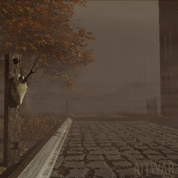

Music Gallery
Click the thumbnails to play/pause a song preview!
| Putrid Borough by AITWAR | |
|---|---|
|

|
An EP inspired by the Classic HD and Silent Hill soundtracks that recreates the vibe of walking through a "familiar yet unrecognizable" town. |